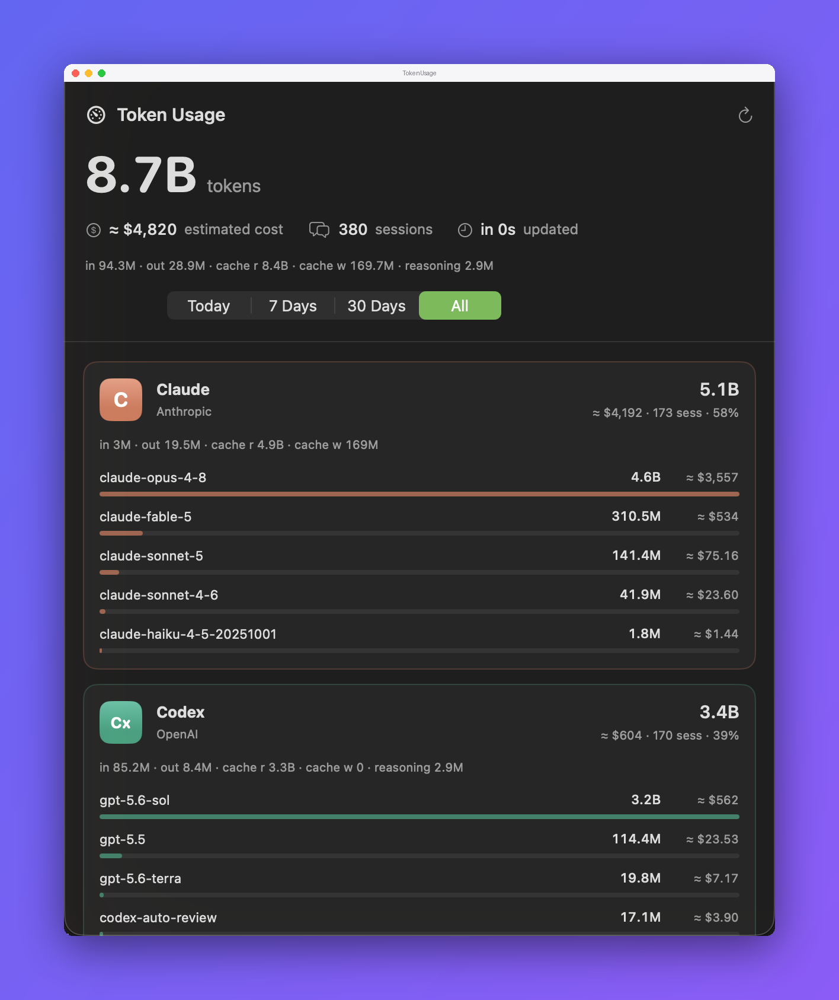

TokenUsage
A menu-bar app that tracks token usage across your AI coding agents by reading their local logs. No network calls, no API keys, nothing leaves your machine.
⬇︎ Download for macOS
Menu-bar total
Running token count, tap to expand per agent.
Full dashboard
Every agent and model, sorted by usage.
Cost estimates
Real cost where the agent records it, estimated otherwise.
Local only
Reads log files on disk. No network, no accounts.
First launch (opening an unsigned app)
TokenUsage isn't signed with an Apple Developer ID, so macOS blocks it the first time you open it. This is expected — you only need to do one of the following once, and it opens normally afterward.
1. Right-click to open
In Finder, Control-click (or right-click) TokenUsage, choose Open, then click Open again in the dialog.
2. If macOS still won't let you (newer versions)
Open System Settings → Privacy & Security, scroll down to the message about TokenUsage being blocked, and click Open Anyway. Confirm with Open Anyway (and Touch ID or your password if asked).
3. Terminal fallback
If neither works, remove the quarantine flag and open it normally:
/usr/bin/xattr -dr com.apple.quarantine /Applications/TokenUsage.app(Adjust the path if you keep the app somewhere other than /Applications.)